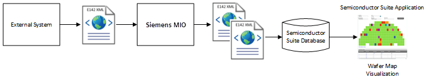

将映射数据发送给 Siemens
映射数据必须采用符合 Semiconductor E142 映射数据 XML 规范的格式。“映射数据”通过“文件适配器”方法提交到 Opcenter Connect MOM (Opcenter CN MOM)。Siemens 不会对外部数据执行数据或结构验证。外部数据是记录系统。Opcenter CN MOM 将数据映射到将数据存储到定义的 Opcenter Execution Semiconductor 数据库架构中的维护事务。
入站数据流程图
此图显示了从外部系统到 Siemens 的数据流。

| 注释: | 有关 Opcenter CN MOM 的信息，请参考《Opcenter Connect MOM 用户指南》。 |